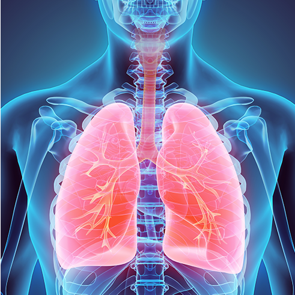

APPARATO RESPIRATORIO
L'apparato respiratorio è una struttura anatomica adatta alla respirazione, presente sia nelle piante che negli animali.
Negli animali terrestri la superficie respiratoria è situata all'interno, ed è costituita, in particolar modo nei tetrapodi, dalle vie aeree, dai polmoni e da eventuali annessi come i sacchi aeriferi. L'apparato respiratorio permette gli scambi gassosi di ossigeno ed anidride carbonica attraverso l'emoglobina negli eritrociti del sangue secondo un processo chiamato ematosi. Lo scambio dei gas avviene in piccoli sacchi cavi detti alveoli, nei mammiferi e nei rettili, e atri negli uccelli.
